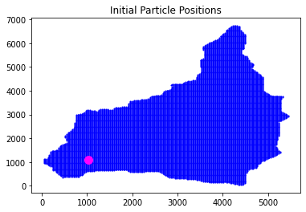
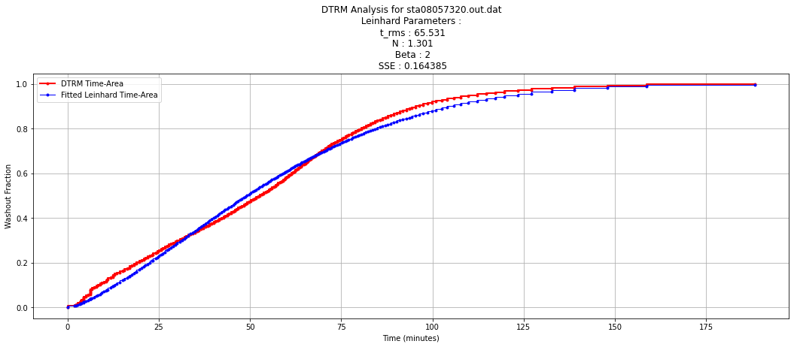

# DTRM Survival Model
# Parcel speeds using a Manning's type model
# V = (1.5/N)*R**(2/3)*S**(1/2)
# INCREASES DOWNWARD, X INCREASES RIGHTWARD
#
# XP(),YP() ARE X AND Y COORDINATES OF PARTICLES
# XG(),YG() ARE X AND Y COORDINATES OF GRID
# HEAD() IS HEAD DISTRIBUTION DEFINED ON THE GRID
# VX() IS COMPUTED VELOCITY IN DIRECTION OF FLOW
# VY() IS COMPUTED TIME OF TRAVEL TO NEXT CELL IN DIRECTION OF FLOW
# DMAP() IS FLOW DIRECTION ARRAY IN 8-DIRECTIONS;
# DIRECTION 0 IS OUTLET
# DIRECTION 9 IS A PIT
# DIRECTION -1 IS NO-FLOW CELL
# ENTIRE MODEL IS SURROUNDED BY DIRECTION 0 CELLS, THESE ARE IGNORED
#
#
# DELATX IS GRID SPACING
# DELTAT IS TIME INCREMENT
# NP ARE NUMBER OF PARTICLES
#
# Y - COORDINATE OF GRID IS ASSOCIATED WITH THE "ROW" INDEX
# X - COORDINATE OF GRID IS ASSOCIATED WITH THE "COLUMN" INDEX
#
# Y - INCREASES DOWNWARD
# X - INCREASES RIGHTWARD
#
# THE UPPER LEFT HAND CORNER OF THE HEAD ARRAY IS X=0,Y=0
# THE LOWER RIGHT HAND CORNER OF THE HEAD ARRAY IS X=XMAX,Y=YMAX
#
# DECLARE ARRAYS
###########################################################
#### import memory management tools (garbage collector) ###
###########################################################
import gc
gc.collect();
###########################################################
#### import plotting support packages ####
###########################################################
import matplotlib.pyplot as plt
###########################################################
#### import random number generator for particle death ####
###########################################################
import random
def mappart(plotfileout,title,xpos,ypos,xsink,ysink):
import matplotlib.pyplot as plt
# build a plot of particle positions and outlet position
plt.figure()
plt.title(title)
plt.scatter(xpos, ypos, s=1, color='blue')
plt.scatter(xsink, ysink, s=100, color='magenta')
plt.savefig(plotfileout);
return
####################################
#### Specify the input file name ###
####################################
filename = "sta08057320.mat.dat" # dtrm input file
#################################
#### Read the DTRM input file ###
#################################
afile = open(filename,"r") # connect to the file
amatrix = [] # null object to store read
bmatrix = []
rowNumA = 0
rowNumB = 0
aflag = 1
bflag = 1
verbose = 1
substrings_to_check = ["DIRECTIVE","VERBOSE","TERSE","DMAP","SMAP","TMAP"]
for line in afile:
# if line contains substrings then first line
if any(substring in line for substring in substrings_to_check):
# if "DIRECTIVE" in line:
directive = line.strip().split()[0]
# print('Row : ',rowNumA,'Contents : ',line)
rowNumA += 1
continue
if rowNumA == 1: # this is second line
nrow = line.strip().split()[0]
ncol = line.strip().split()[1]
# print(nrow,ncol)
# print('Row : ',rowNumA,'Contents : ',line.strip().split())
aflag = 0 # read into amatrix
rowNumA += 1
continue
####################################
#### Check for seperator fields ####
#### Read input matrices to EOL ####
####################################
if "CMAN,FDEEP,NMAN" in line: # seperates
cman = line.strip().split()[0]
fdeep = line.strip().split()[1]
nman = line.strip().split()[2]
alife = line.strip().split()[3]
# print('Row : ',rowNumA,'Contents : ',line)
# rowNumA += 1
aflag = 1
bflag = 1
continue
if "DX,DT,TMAX,D1" in line: # seperates
dx = line.strip().split()[0]
dt = line.strip().split()[1]
tmax = line.strip().split()[2]
d1 = line.strip().split()[3]
dyt = line.strip().split()[4]
dxt = line.strip().split()[5]
# print('Row : ',rowNumA,'Contents : ',line)
# rowNumA += 1
aflag = 1
bflag = 1
continue
if "NP,PRINT_N" in line: # seperates
np = line.strip().split()[0]
npt = line.strip().split()[1]
# print('Row : ',rowNumA,'Contents : ',line)
aflag = 1
bflag = 0 # read into bmatrix
continue
if "outlet loc" in line: # seperates
nrout = line.strip().split()[0]
ncout = line.strip().split()[1]
elevout = line.strip().split()[2]
#########################################
#### reindex to start from 0 index ####
#########################################
nrout = int(nrout) - 1
ncout = int(ncout) - 1
# print('Row : ',rowNumA,'Contents : ',line)
aflag = 1
bflag = 1
elif aflag == 0:
amatrix.append([float(n) for n in line.strip().split()])
# print('Row : ',rowNumA,'Contents : ',line.strip().split())
rowNumA += 1
elif bflag == 0:
bmatrix.append([float(n) for n in line.strip().split()])
# print('Row : ',rowNumB,'Contents : ',line.strip().split())
rowNumB += 1
# print("loop bottom")
afile.close() # Disconnect the file
#################################
#### Echo to DTRM output file ###
#################################
fileout = filename.replace("mat","out")
afile = open(fileout,"w") # connect to the file
afile.write("DTRM-Survival Jupyter/iPython")
afile.write("\n INPUT FILENAME : " + repr(filename))
afile.write("\n OUTPUT FILENAME : " + repr(fileout))
afile.write("\n OUTPUT DENSITY : " + directive)
afile.write("\n ROWS : " + repr(int(nrow)))
afile.write("\n COLUMNS : " + repr(int(ncol)))
afile.write("\n CMAN : " + repr(float(cman)))
afile.write("\n FDEEP : " + repr(float(fdeep)))
afile.write("\n NMAN : " + repr(float(nman)))
afile.write("\n ALIFE : " + repr(float(alife)))
afile.write("\n DX : " + repr(float(dx)))
afile.write("\n DT : " + repr(float(dt)))
afile.write("\n TMAX : " + repr(float(tmax)))
afile.write("\n D1 : " + repr(float(d1)))
afile.write("\n DYT : " + repr(float(dyt)))
afile.write("\n DXT : " + repr(float(dxt)))
afile.write("\n NUMBER PARTICLES: " + repr(int(np)))
afile.write("\n PRINT FREQUENCY : " + repr(int(npt)))
afile.write("\n OUTLET ROW : " + repr(int(nrout)))
afile.write("\n OUTLET COLUMN : " + repr(int(ncout)))
afile.write("\nOUTLET ELEVATION : " + repr(float(elevout)))
afile.close()
##############################################
#### structure the amatrix and bmatrix ####
#### arrays into index accessible arrays ####
##############################################
ncol = int(ncol)
nrow = int(nrow)
#print(nrow,ncol)
head = [[0.0 for j in range(ncol)] for i in range(nrow)]
dmap = [[-999.0 for j in range(ncol)] for i in range(nrow)]
pmap = [[0.0 for j in range(ncol)] for i in range(nrow)]
pbmap = [[0.0 for j in range(ncol)] for i in range(nrow)]
nr2r = len(amatrix)
nc2r = len(amatrix[0])
#print(nr2r,nc2r)
col2assign = 0
row2assign = 0
for ir2r in range(nr2r): #i is row to assign
for jc2r in range(nc2r): #j is column to assign
# print("rc2r ",ir2r,jc2r,row2assign,col2assign)
head[row2assign][col2assign] = float(amatrix[ir2r][jc2r])
pmap[row2assign][col2assign] = float(bmatrix[ir2r][jc2r])
pbmap[row2assign][col2assign] = float(bmatrix[ir2r][jc2r])
col2assign += 1
if col2assign >= ncol:
col2assign = 0
row2assign += 1
break
##############################################
#### get min/max and mask count and report ###
##############################################
maxhead = 0.00000001
minhead = 10000000.0
countP = 0.0
for irow in range(nrow):
if max(head[irow]) > maxhead:
maxhead = max(head[irow])
if min(head[irow]) < minhead:
minhead = min(head[irow])
countP = countP + sum(pbmap[irow])
afile = open(fileout,"a") # connect to the file; append
afile.write("\n MIN ELEVATION : " + repr(float(minhead)))
afile.write("\n MAX ELEVATION : " + repr(float(maxhead)))
afile.write("\n MASK COUNT : " + repr(int(countP)))
afile.close()
##############################################
#### build grid locations for cell centers ###
##############################################
xg = [0.0 for i in range(ncol)]
yg = [0.0 for i in range(nrow)]
xbg = [0.0 for i in range(ncol)]
ybg = [0.0 for i in range(nrow)]
dx = float(dx)
yg[0] =0.5*dx
xg[0] =0.5*dx
ybg[0] =0.5*dx
xbg[0] =0.5*dx
for irow in range(1,nrow):
yg[irow]=yg[irow-1]+dx
ybg[irow]=ybg[irow-1]+dx
for jcol in range(1,ncol):
xg[jcol]=xg[jcol-1]+dx
xbg[jcol]=xbg[jcol-1]+dx
if directive == 'VERBOSE':
afile = open(fileout,"a") # connect to the file; append
afile.write("\n GRID CELL LOCATIONS : \n ICELL XGRID YGRID ")
cellcount=1
for irow in range(nrow):
for jcol in range(ncol):
afile.write('\n ' + repr(cellcount) + ' ' + repr(round(xg[jcol],3)) + ' ' + repr(round(yg[irow],3)))
cellcount += 1
afile.close()
############ memory management ###############
del amatrix # release objects to free RAM #
del bmatrix # release objects to free RAM #
gc.collect(); # force garbage collection #
##############################################
##############################################
#### locate the outlet in the grid system ####
##############################################
xout=xg[int(ncout)]
yout=yg[int(nrout)]
xmin=xg[0]
ymin=yg[0]
xmax=xg[ncol-1]+dx
ymax=yg[nrow-1]+dx
afile = open(fileout,"a") # connect to the file; append
afile.write("\n SUMMARY IN GRID COORDINATES ")
afile.write("\n (X,Y) OUTLET : " + repr(float(xout)) + "," + repr(float(yout)) )
afile.write("\n (XMIN,YMIN) : " + repr(float(xmin)) + "," + repr(float(ymin)) )
afile.write("\n (XMAX,YMAX) : " + repr(float(xmax)) + "," + repr(float(ymax)))
afile.close()
########################################################################
#### convert particle map into an attribute array (i.e. alive/dead) ####
########################################################################
np = 0 # particle count
ip = 0 # particle index
lox = 0 # locaton outlet x
loy = 0 # location outlet y
countP = int(countP)
xp = [0.0 for i in range(countP)] # location x of particle ip
yp = [0.0 for i in range(countP)] # location y of particle ip
xps = [0.0 for i in range(countP)] # start location x of particle ip
yps = [0.0 for i in range(countP)] # start location y of particle ip
tp = [0.0 for i in range(countP)] # location t of particle ip
wp = [0.0 for i in range(countP)] # attribute w of particle ip
for irow in range(nrow):
for jcol in range(ncol):
if pbmap[irow][jcol] == 1.0:
xp[ip]=xg[jcol]
yp[ip]=yg[irow]
tp[ip]=0.0
wp[ip]=1.0 # make alive
# add start locations to xps,yps for particle ip
xps[ip]=xg[jcol]
yps[ip]=yg[irow]
np += 1
ip += 1
else:
xbg[jcol]= -1e9 # large negative float to indicate boundary
ybg[irow]= -1e9 # large negative float to indicate boundary
if xg[jcol] == xout and yg[irow] == yout : # check if outlet
lop = ip-1
lox = jcol
loy = irow
afile = open(fileout,"a") # connect to the file; append
afile.write("\n SUMMARY OF PARTICLE ARRAY CALCULATIONS ")
afile.write("\n PARTICLE ARRAY LENGTH : " + repr(np))
afile.write("\n PARTICLE INPUT COUNT : " + repr(countP))
afile.write("\n OUTLET (LOX,LOY) : " + repr(float(lox)) + "," + repr(float(loy)))
afile.write("\n OUTLET INDEX IN PARTICLE ARRAY : " + repr(lop))
afile.close()
################################
### DEBUGGING VERBOSE OUTPUT ###
################################
if directive == 'VERBOSE':
afile = open(fileout,"a") # connect to the file; append
afile.write("\n PARTICLE START LOCATIONS : \n IPART XPART YPART ")
cellcount=1
for ip in range(np):
afile.write('\n ' + repr(ip) + ' ' + repr(round(xp[ip],3)) + ' ' + repr(round(yp[ip],3)))
afile.close()
# build a plot of particle positions and outlet position
plotfileout = filename.replace("mat.dat","000.png")
# plt.figure()
plottitle="Initial Particle Positions"
# plt.scatter(xps, yps, s=1, color='blue')
# plt.scatter(xout, yout, s=100, color='magenta')
# plt.savefig(plotfileout);
mappart(plotfileout,plottitle,xps,yps,xout,yout)
#################################
#### compute velocity field ####
#################################
vx = [[0.0 for j in range(ncol)] for i in range(nrow)] # 0 lists to store velocity
vy = [[0.0 for j in range(ncol)] for i in range(nrow)] # 0 lists to store velocity
cman = float(cman)
nman = float(nman)
fdeep = float(fdeep)
def getdirs(head,vx,vy,nrow,ncol,cman,rman,dx,fdepth,pbmap,dmap,lox,loy,xg,yg):
#########################
#### Some constants ####
#########################
import math
dxinv=1.0/(dx*3.25) # XY distances in feet
conveyance=(cman/rman)*fdepth**(2./3.)
channel=(cman/rman)*(2.0*fdepth)**(2./3.)
dsqrtiv=1.0/math.sqrt(2.0)
d = [-10.0 for i in range(9)]
###################################
### Directions ####
### ####
### 1 2 3 ####
### ####
### 4 0 5 ####
### ####
### 6 7 8 ####
### ####
###################################
# interior cells
for irow in range(1,nrow-1):
for jcol in range(1,ncol-1):
d[0]=-1.0
d[1]=(head[irow][jcol]-head[irow-1][jcol-1])*pbmap[irow-1][jcol-1]
d[2]=(head[irow][jcol]-head[irow-1][jcol ])*pbmap[irow-1][jcol ]
d[3]=(head[irow][jcol]-head[irow-1][jcol+1])*pbmap[irow-1][jcol+1]
d[4]=(head[irow][jcol]-head[irow ][jcol-1])*pbmap[irow ][jcol-1]
d[5]=(head[irow][jcol]-head[irow ][jcol+1])*pbmap[irow ][jcol+1]
d[6]=(head[irow][jcol]-head[irow+1][jcol-1])*pbmap[irow+1][jcol-1]
d[7]=(head[irow][jcol]-head[irow+1][jcol ])*pbmap[irow+1][jcol ]
d[8]=(head[irow][jcol]-head[irow+1][jcol+1])*pbmap[irow+1][jcol+1]
# check bigger then zero
big = 0
idir = 0
for ii in range(1,9):
if d[ii] > big:
big = d[ii]
idir = ii
# assign direction to dmap; if boundary cell ignore
if pbmap[irow][jcol] > 0:
dmap[irow][jcol]=idir*pbmap[irow][jcol]
else:
dmap[irow][jcol]=idir*pbmap[irow][jcol]-10.0
# compute speed and time
if idir == 1:
vx[irow][jcol]=conveyance*math.sqrt(d[1]*dxinv*dsqrtiv)
vy[irow][jcol]=math.sqrt(2.0)*dx*3.25/vx[irow][jcol]
elif idir == 2:
vx[irow][jcol]=conveyance*math.sqrt(d[2]*dxinv)
vy[irow][jcol]=dx*3.25/vx[irow][jcol]
elif idir == 3:
vx[irow][jcol]=conveyance*math.sqrt(d[3]*dxinv*dsqrtiv)
vy[irow][jcol]=math.sqrt(2.0)*dx*3.25/vx[irow][jcol]
elif idir == 4:
vx[irow][jcol]=conveyance*math.sqrt(d[4]*dxinv)
vy[irow][jcol]=dx*3.25/vx[irow][jcol]
elif idir == 5:
vx[irow][jcol]=conveyance*math.sqrt(d[5]*dxinv)
vy[irow][jcol]=dx*3.25/vx[irow][jcol]
elif idir == 6:
vx[irow][jcol]=conveyance*math.sqrt(d[6]*dxinv*dsqrtiv)
vy[irow][jcol]=math.sqrt(2.0)*dx*3.25/vx[irow][jcol]
elif idir== 7:
vx[irow][jcol]=conveyance*math.sqrt(d[7]*dxinv)
vy[irow][jcol]=dx*3.25/vx[irow][jcol]
elif idir == 8:
vx[irow][jcol]=conveyance*math.sqrt(d[8]*dxinv*dsqrtiv)
vy[irow][jcol]=math.sqrt(2.0)*dx*3.25/vx[irow][jcol]
elif idir == 0:
# these are sinks or plateaus, route to outlet by cartesian path
vy[irow][jcol]=-2.
vx[irow][jcol] = head[irow][jcol]-head[loy][lox]
dist=math.sqrt( (xg[jcol]-xg[lox])**2 + (yg[irow]-yg[loy])**2 )
if dist != 0.0:
vx[irow][jcol] = conveyance*math.sqrt(vx[irow][jcol]*dxinv*dsqrtiv)
vy[irow][jcol] = math.sqrt(2.0)*dist*3.25/vx[irow][jcol]
# if outlet cell override direction
dmap[loy][lox]=0*pbmap[loy][lox]
vx[loy][lox]=0.0
vy[loy][lox]=0.0
return()
getdirs(head,vx,vy,nrow,ncol,cman,nman,dx,fdeep,pbmap,dmap,lox,loy,xg,yg)
################################
### DEBUGGING VERBOSE OUTPUT ###
################################
if directive == 'VERBOSE' or directive == 'DMAP':
debugfile = filename.replace("mat.dat","dbmap.dat")
afile = open(debugfile,"w") # connect to the file; overwrite
# direction code
afile.write("DIRECTION MAP : \n IROW : JCOL : X(JCOL) : Y(IROW) : ELEVATION : DIRECTION : SPEED : PATH-TIME : PBMAP ")
for irow in range(nrow):
for jcol in range(ncol):
afile.write('\n %3i : %3i : %10.3f : %10.3f : %7.2f : %4i : %7.2f : %7.2f : %7.2f ' % (irow,jcol,xg[jcol],yg[irow],\
head[irow][jcol],dmap[irow][jcol],vx[irow][jcol],vy[irow][jcol],pbmap[irow][jcol]))
#afile.write('\n ' + repr(irow) + ' ' + repr(jcol) + ' ' + repr(round(xg[jcol],3)) + ' ' + repr(round(yg[irow],3)) + ' ' \
# + repr(round(head[irow][jcol],3)) + ' ' + repr(round(dmap[irow][jcol],3))+ ' ' + repr(round(vx[irow][jcol],3)) \
# + ' ' + repr(round(vy[irow][jcol],3)))
afile.close()
##################################################
#### regular output static contents completed ####
##################################################
afile = open(fileout,"a") # connect to the file; append
afile.write("\n VELOCITY MAPS BUILT ")
afile.write("\n PARTICLE MAPS BUILT ")
afile.write("\n DIRECTION MAPS BUILT ")
maxvx = 0.00000001 # Different floats on purpose to force different memory addresses
maxvy = 0.0000001
minvx = 10000000.0
minvy = 1000000.0
for irow in range(nrow):
for jcol in range(ncol):
if vx[irow][jcol] > maxvx:
maxvx = vx[irow][jcol]
if vy[irow][jcol] > maxvy:
maxvy = vy[irow][jcol]
if vx[irow][jcol] < minvx:
minvx = vx[irow][jcol]
if vy[irow][jcol] < minvy:
minvy = vy[irow][jcol]
afile.write("\n MIN VX VALUE = : " + repr(round(minvx,3)))
afile.write("\n MIN VY VALUE = : " + repr(round(minvy,3)))
afile.write("\n MAX VX VALUE = : " + repr(round(maxvx,3)))
afile.write("\n MAX VY VALUE = : " + repr(round(maxvy,3)))
afile.close()
def findpart(xp,yp,xg,yg,nrows,ncols,ip):
# all arrays must exist, lpx and lpy are returned in call
# set search distance
big = 1.0e9
# locate nearest grid point
dist1=big
dist2=big
for irow in range(nrows):
for jcol in range(ncols):
dist2 = (xp[ip]-xg[jcol])**2 + (yp[ip]-yg[irow])**2
if dist2 < dist1:
dist1 = dist2
lpx=jcol
lpy=irow
return(lpy,lpx) # should operate on arrays in place
def movepart(xp,yp,xg,yg,vx,vy,nrow,ncol,ip,dmap,tp,lox,loy):
# function to move a single particle of index ip in the particle attribute array
# locate the particle cell index
ploc=findpart(xp,yp,xg,yg,nrow,ncol,ip)
lpx=ploc[1]
lpy=ploc[0]
# find direction to move
try: # find direction to move
dmove=int(dmap[lpy][lpx])
except: # raise exception and exit
print("FailDMOVE at",lpy,lpx)
# exit()
##print("dmove",dmove,lpx,lpy)
# find time to move
try: # find time to move
tmove=vy[lpy][lpx]
except: # raise exception and exit
print("FailTMOVE at",lpy,lpx)
# exit()
flag = 0
# move the particle
if dmove == 1: # left up - valid
xp[ip]=xg[lpx-1]
yp[ip]=yg[lpy-1]
tp[ip]=tp[ip]+tmove
if dmove == 2: # up - fixed
xp[ip]=xg[lpx ]
yp[ip]=yg[lpy-1]
tp[ip]=tp[ip]+tmove
if dmove == 3: # right up - fixed
xp[ip]=xg[lpx+1]
yp[ip]=yg[lpy-1]
tp[ip]=tp[ip]+tmove
if dmove == 4: # left - valid
xp[ip]=xg[lpx-1]
yp[ip]=yg[lpy ]
tp[ip]=tp[ip]+tmove
if dmove == 5: # right - fixed
xp[ip]=xg[lpx+1]
yp[ip]=yg[lpy ]
tp[ip]=tp[ip]+tmove
if dmove == 6: # left down - valid
xp[ip]=xg[lpx-1]
yp[ip]=yg[lpy+1]
tp[ip]=tp[ip]+tmove
if dmove == 7: # down - fixed
xp[ip]=xg[lpx ]
yp[ip]=yg[lpy+1]
tp[ip]=tp[ip]+tmove
if dmove == 8: # right down - fixed
xp[ip]=xg[lpx+1]
yp[ip]=yg[lpy+1]
tp[ip]=tp[ip]+tmove
if dmove == 0: # outlet, sink, or plateau
# check if outlet
if xp[ip]== xg[lox] and yp[ip]==yg[loy]:
tp[ip]=tp[ip]
#print("OUTLET",ip,xp[ip],yp[ip],xg[lox],yg[loy])
else: # must be a sink or plateau -- route to outlet
#print("SUMP IN",ip,xp[ip],yp[ip],xg[lox],yg[loy])
xp[ip]=xg[lox]
yp[ip]=yg[loy]
tp[ip]=tp[ip]+tmove
#print("SUMP OUT",ip,xp[ip],yp[ip],xg[lox],yg[loy])
if dmove == 9: # pit
xp[ip]=xg[lox]
yp[ip]=yg[loy]
tp[ip]=tp[ip]+tmove
if dmove == 10: # boundary
print('ERROR -- ATTEMPTING TO MOVE IN BOUNDARY ARRAY')
print('IP,LPX,LPY =',ip,lpy,lpx)
print('DMOVE,TMOVE =',dmove,tmove)
return()

######################################################
#### MOVE ALL CURRENT PARTICLES UNTIL EXIT OR DIE ####
######################################################
npmv = 0 #number of particles moved
#lpx = -1 # initial value lpx
#lpy = -2 # initial value lpy
alife = float(alife)
maxtry = int(0.2*(nrow*ncol)**0.5) # longest path guess.
print(maxtry)
40
for ip in range(np): # particle index loop
for im in range(maxtry): # maximum steps to traverse area
ploc=findpart(xp,yp,xg,yg,nrow,ncol,ip)
##print("particle loc B4 move: ",ip,xp[ip],yp[ip],tp[ip],ploc[0],ploc[1],dmap[ploc[0]][ploc[1]],head[ploc[0]][ploc[1]],loy,lox)
movepart(xp,yp,xg,yg,vx,vy,nrow,ncol,ip,dmap,tp,lox,loy) # move particle one step
ploc=findpart(xp,yp,xg,yg,nrow,ncol,ip) # locate particle
##print("particle loc AF move: ",ip,xp[ip],yp[ip],tp[ip],ploc[0],ploc[1],dmap[ploc[0]][ploc[1]],head[ploc[0]][ploc[1]],loy,lox)
# check if it made it to outlet
if ploc[0] == loy and ploc[1] == lox:
#print("REACH OUTLET : ",ip,ploc[0],ploc[1],loy,lox,im)
break #exit the traverse loop and process next particle
# check for particle death
death = random.random() # generate a random number in range (0,1)
if death > alife:
wp[ip]=0.0 # particle dies
break #exit the traverse loop and process next particle
print('die')
if ip % 2000 == 0:
print("PARTICLES MOVED SO FAR : ",ip,im)
npmv += 1
print("PARTICLE COUNT MOVED : ",npmv)
# build a plot of particle positions and outlet position
plotfileout = filename.replace("mat.dat","001.png")
# plt.figure()
plottitle="Final Particle Positions"
# plt.scatter(xps, yps, s=1, color='blue')
# plt.scatter(xout, yout, s=100, color='magenta')
# plt.savefig(plotfileout);
mappart(plotfileout,plottitle,xp,yp,xout,yout)
print("MOVE LOOP ENDED")
PARTICLES MOVED SO FAR : 0 1
PARTICLES MOVED SO FAR : 2000 1
PARTICLES MOVED SO FAR : 4000 3
PARTICLES MOVED SO FAR : 6000 3
PARTICLES MOVED SO FAR : 8000 5
PARTICLES MOVED SO FAR : 10000 1
PARTICLES MOVED SO FAR : 12000 10
PARTICLES MOVED SO FAR : 14000 5
PARTICLES MOVED SO FAR : 16000 2
PARTICLES MOVED SO FAR : 18000 1
PARTICLES MOVED SO FAR : 20000 1
PARTICLE COUNT MOVED : 20639
MOVE LOOP ENDED
#############################
#### sort the time array ####
#############################
# np=int(countP) ## repair accidental numpy naming
sorted_time = sorted(tp)
print(max(sorted_time),max(tp),sum(wp))
#len(sorted_time)
afile = open(fileout,"a") # connect to the file; append
afile.write("\n CUMULATIVE ARRIVAL TIME DISTRIBUTION \n TIME FRACTION NUMBER")
gc.collect(); # force garbage collection #
for ip in range(0,np,100): # particle index loop
# print(ip,sorted_time[ip]/20.0) ## activate to debug
afile.write('\n %10.3f %10.3f %10i ' % (sorted_time[ip]/20.0,float(ip)/float(np),ip))
afile.close()
5271.490748326969 5271.490748326969 14945.0
# Fit Leinhard Hydrograph
# Instructions:
# Load the merit function, provide filename from DTRM program.
# Make initial guess using the result() function
# Supply to Powell Direction Set method, run until success or failure.
# If success, insert solution into result function and plot.
def merit(x):
# function to minimize to find values of tbar and shape
# x[0] == tbar
# x[1] == shape
# Script reads sta01234567.out.txt files and plots empirical cumulative and leinhard hydrographs and
# systematically finds best values for tbar and shape
filename = 'sta08057320.out.dat' # filename to read
def prMat(amatrix):
# prints the contents of amatrix to stdio
howMany = len(amatrix) # get row count
howWide = len(amatrix[0]) # get column count
for irow in range(howMany):
print(amatrix[irow])
return()
################################
# connect and read file #
################################
afile = open(filename,"r") # connect and read file
amatrix = [] # null object to store read
rowNumA = 0
rowRead = 0
substring1="ALIVE COUNT"
for line in afile:
if rowRead < 42: # skip first 42 rows
# print(' Row Read: ',rowRead,' Content: ',line)
rowRead = rowRead+1
elif line.find(substring1) != -1: # check for last row
#print('Last Row')
continue
else: # read the meaningful data
amatrix.append([float(n) for n in line.strip().split()])
rowNumA += 1
afile.close() # Disconnect the file
#print(rowNumA); # for debugging activate
#prMat(amatrix); # for debugging activate
################################
# build lists for plotting #
################################
time = []
acc_flow = []
mod_flow = []
for irow in range(rowNumA):
time.append(amatrix[irow][0])
acc_flow.append(amatrix[irow][1])
################################
# Leinhard Hydrograph Kernel #
################################
def kernelfn(tbar,time,scale=2,shape=3,beta=2):
'''
kernel function for a unit hydrograph - uses a gamma-type hydrograph
scale: a scaling parameter, should be 2, but left adjustable for grins
shape: Nash's reservoir number
tbar: Characteristic time, lag time in NRCS, time-to-peak,
and time-of-concentration are all similar concepts.
beta: Exponent controling decay rate in exponential part of function;
Should be a 2 or 3 for typical watersheds, but left adjusible for
ornery cases.
'''
import math
# term1 = (scale/tbar)/math.gamma(shape)
# term2 = (time)/tbar
# term3 = term2**(2*shape-1)
# term4 = math.exp(-1*term2**beta)
# kernelfn = term1*term3*term4
a5 = time/tbar
a6 = shape/beta
a7 = math.gamma(a6)
a8 = a6**a6
a9 = 1/tbar
a10 = a5**(shape-1)
a11 = math.exp(-a6*(a5**beta))
a12 = a9*a10
a13 = beta/a7
a14 = a13*a12*a11*a8
kernelfn=a14
return kernelfn
#########################
# Leinhard Parameters #
#########################
scale = 2 # a scale constant - has units of rate
shape = x[1] # Adjust N value
tbar = x[0] # Adjust t_rms value
beta = 2 # Use beta value (1 or 2)
inc_model = [] # accumulated Leinhard model
for irow in range(rowNumA):
inc_model.append(kernelfn(tbar,time[irow],scale,shape,beta))
# Accumulate the values
acc_model = []
acc_model.append(0.0)
for irow in range(1,rowNumA):
acc_model.append( 0.5*(inc_model[irow]+inc_model[irow-1])*(time[irow]-time[irow-1])+acc_model[irow-1] )
# print(inc_model[irow],acc_model[irow]) # activate for debug
# Compute the merit function value
sse=0.0
for irow in range(1,rowNumA):
sse=sse+(acc_model[irow]-acc_flow[irow])**2
return(sse)
import numpy
from scipy.optimize import minimize
x0 = numpy.array([79.0,1.4])
res = minimize(merit, x0, method='powell',options={'disp': True})
print(res.x)
<ipython-input-22-9633100e2808>:81: RuntimeWarning: invalid value encountered in double_scalars
a8 = a6**a6
<ipython-input-22-9633100e2808>:83: RuntimeWarning: divide by zero encountered in double_scalars
a10 = a5**(shape-1)
Optimization terminated successfully.
Current function value: 0.164385
Iterations: 3
Function evaluations: 80
[65.5310526 1.30104537]
def result(x):
# function to plot result of optimization - feed the optimization results
# x[0] == tbar
# x[1] == shape
# Script reads sta01234567.out.txt files and plots empirical cumulative and leinhard hydrographs and
# systematically finds best values for tbar and shape
filename = 'sta08057320.out.dat' # filename to read
def prMat(amatrix):
# prints the contents of amatrix to stdio
howMany = len(amatrix) # get row count
howWide = len(amatrix[0]) # get column count
for irow in range(howMany):
print(amatrix[irow])
return()
import matplotlib.pyplot as plt
def Plot2Stairs(list1,list2,list3,list4,ptitle,xlabel,ylabel,legend1,legend2):
# Create a line chart of list2,list4 on y axis and list1,list3 on x axis
mydata = plt.figure(figsize = (18,6)) # build a drawing canvass from figure class; aspect ratio 4x3
plt.step(list1, list2, c='red', marker='.',linewidth=2) # basic line plot
plt.step(list3, list4, c='blue', marker='.',linewidth=1) # basic line plot
plt.xlabel(xlabel) # label the x-axis
plt.ylabel(ylabel) # label the y-axis, notice the LaTex markup
plt.legend([legend1,legend2]) # legend for each series
plt.title(ptitle) # make a plot title
# plt.xlim(100000, 120000)
# plt.ylim(2700, 2850)
plt.grid() # display a grid
plt.show() # display the plot
return()
################################
# connect and read file #
################################
afile = open(filename,"r") # connect and read file
amatrix = [] # null object to store read
rowNumA = 0
rowRead = 0
substring1="ALIVE COUNT"
for line in afile:
if rowRead < 42: # skip first 42 rows
# print(' Row Read: ',rowRead,' Content: ',line)
rowRead = rowRead+1
elif line.find(substring1) != -1: # check for last row
#print('Last Row')
continue
else: # read the meaningful data
amatrix.append([float(n) for n in line.strip().split()])
rowNumA += 1
afile.close() # Disconnect the file
#print(rowNumA); # for debugging activate
#prMat(amatrix); # for debugging activate
################################
# build lists for plotting #
################################
time = []
acc_flow = []
mod_flow = []
for irow in range(rowNumA):
time.append(amatrix[irow][0])
acc_flow.append(amatrix[irow][1])
################################
# Leinhard Hydrograph Kernel #
################################
def kernelfn(tbar,time,scale=2,shape=3,beta=2):
'''
kernel function for a unit hydrograph - uses a gamma-type hydrograph
scale: a scaling parameter, should be 2, but left adjustable for grins
shape: Nash's reservoir number
tbar: Characteristic time, lag time in NRCS, time-to-peak,
and time-of-concentration are all similar concepts.
beta: Exponent controling decay rate in exponential part of function;
Should be a 2 or 3 for typical watersheds, but left adjusible for
ornery cases.
'''
import math
# term1 = (scale/tbar)/math.gamma(shape)
# term2 = (time)/tbar
# term3 = term2**(2*shape-1)
# term4 = math.exp(-1*term2**beta)
# kernelfn = term1*term3*term4
a5 = time/tbar
a6 = shape/beta
a7 = math.gamma(a6)
a8 = a6**a6
a9 = 1/tbar
a10 = a5**(shape-1)
a11 = math.exp(-a6*(a5**beta))
a12 = a9*a10
a13 = beta/a7
a14 = a13*a12*a11*a8
kernelfn=a14
return kernelfn
#########################
# Leinhard Parameters #
#########################
scale = 2 # a scale constant - has units of rate
shape = x[1] # Adjust N value
tbar = x[0] # Adjust t_rms value
beta = 2 # Use beta value (1 or 2)
inc_model = [] # accumulated Leinhard model
for irow in range(rowNumA):
inc_model.append(kernelfn(tbar,time[irow],scale,shape,beta))
# Accumulate the values
acc_model = []
acc_model.append(0.0)
for irow in range(1,rowNumA):
acc_model.append( 0.5*(inc_model[irow]+inc_model[irow-1])*(time[irow]-time[irow-1])+acc_model[irow-1] )
# print(inc_model[irow],acc_model[irow]) # activate for debug
# Compute the merit function value
sse=0.0
for irow in range(1,rowNumA):
sse=sse+(acc_model[irow]-acc_flow[irow])**2
ptitle="DTRM Analysis for " + filename + \
"\n Leinhard Parameters : " + \
"\n t_rms : " + repr(round(tbar,3)) + \
"\n N : " + repr(round(shape,3)) + \
"\n Beta : "+ repr(beta) + \
"\n SSE : " + repr(round(sse,6))
xlabel="Time (minutes)"
ylabel="Washout Fraction"
legend1="DTRM Time-Area"
legend2="Fitted Leinhard Time-Area"
Plot2Stairs(time,acc_flow,time,acc_model,ptitle,xlabel,ylabel,legend1,legend2);
return(sse);
result([res.x[0] , res.x[1]])

0.1643849812366717